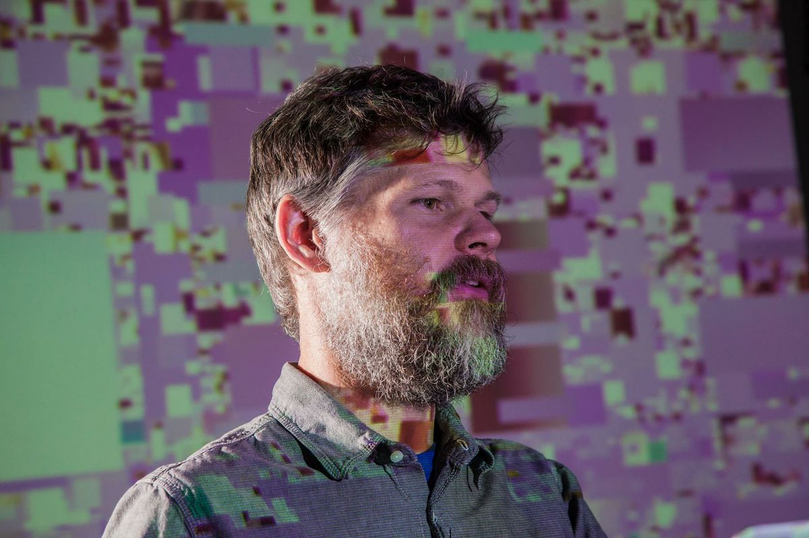
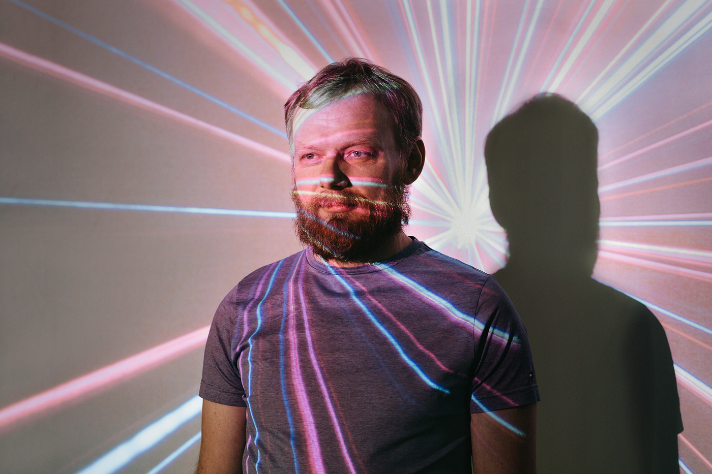
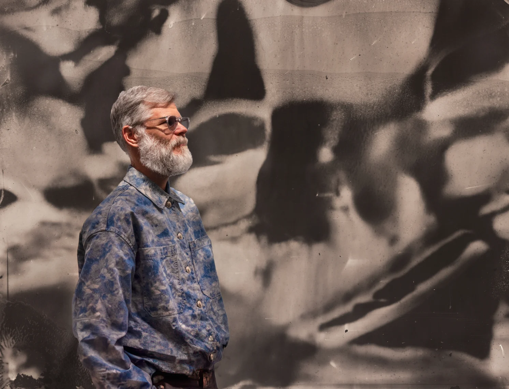

Trayectoria y formacion
Casey Reas es un artista y educador estadounidense, conocido por su trabajo en arte generativo y programación. Nació en 1972 en California y estudió en la Universidad de California, Los Ángeles (UCLA).
Reas ha sido influyente en el desarrollo de lenguajes de programación para el arte, como Processing, que facilita la creación de obras digitales interactivas. Su trabajo explora la relación entre código, sistemas y expresión artística.
Exhibiciones y reconocimientos
Casey Reas ha exhibido su trabajo en importantes museos y galerías de todo el mundo, incluyendo el Museo de Arte Moderno de Nueva York, el Museo Whitney, el Museo de Arte Contemporáneo de Los Ángeles y la Bienal de Venecia. Su obra ha sido reconocida por su innovación y su capacidad para explorar nuevas formas de expresión artística a través del código.


Actualidad
Actualmente, Casey Reas continúa explorando nuevas formas de arte generativo y programación. Su trabajo sigue siendo una influencia importante en la comunidad artística y tecnológica, y su enfoque innovador ha contribuido a expandir las posibilidades del arte digital en el siglo XXI.